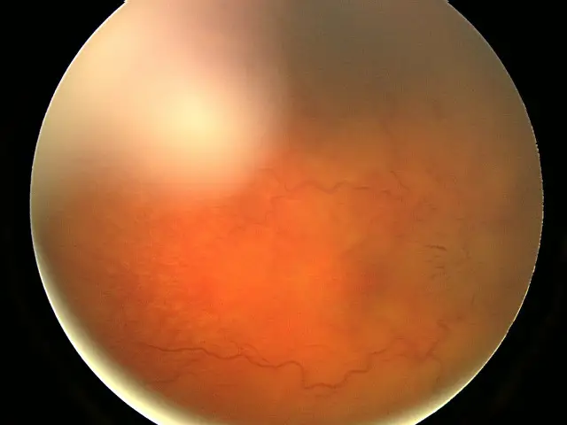

DX.8 — Hypertension intracrânienne idiopathique ou secondaire
L'hypertension intracrânienne idiopathique touche surtout la jeune femme obèse et menace la vue : la cécité concerne jusqu'à 10 % des patientsS1. Elle entre dans cette situation de départ par la diplopie horizontale d'une paralysie du nerf VIS4. Le médecin recherche donc un œdème papillaire devant toute diplopie horizontale avec céphaléesS3. Il obtient ensuite une IRM avec veinographie dans les 24 heures, puis une ponction lombaire avec pression d'ouvertureS3. Une thrombose veineuse cérébrale ou un médicament rendent l'hypertension secondaire, et le traitement vise alors la causeS3S11.
1. Définition
La Fédération européenne des céphalées (European Headache Federation, EHF, 2018) définit l'hypertension intracrânienne idiopathique (HTII) comme une élévation de la pression intracrânienne sans cause identifiableS4. La Revue Médicale Suisse reprend ensuite cette définition en 2021 : céphalées, avec ou sans atteinte visuelle, pression élevée du liquide céphalorachidien (LCR) et absence de cause secondaireS1.
Le consensus britannique de 2018 précise le cadre : la pression est élevée sans hydrocéphalie ni lésion expansive, et la composition du LCR reste normaleS3. L'hypertension intracrânienne (HTIC) devient en revanche secondaire dès qu'une cause est trouvée, par exemple une thrombose veineuse cérébrale ou un médicamentS3S4. Le terme « pseudotumor cerebri » désigne aujourd'hui l'ensemble du syndrome, qui réunit la forme primaire et les formes secondairesS4S5.
Ce que les textes nomment forme primaire et forme secondaire
Les critères révisés de 2013 séparent le syndrome en une forme primaire, l'HTII, et une forme secondaire à une cause identifiableS5. La recommandation européenne traite seulement la forme primaire, car la forme secondaire relève du traitement de sa causeS4. Le consensus britannique définit l'adulte comme tout patient de plus de 16 ansS3.
| Terme du consensus britannique | Définition retenue |
|---|---|
| HTII typique | La patiente est une femme en âge de procréer dont l'indice de masse corporelle (IMC) dépasse 30 kg/m²S3. |
| HTII atypique | Le patient n'est pas une femme, n'est pas en âge de procréer ou a un IMC inférieur à 30 kg/m² ; il exige un bilan plus pousséS3. |
| HTII fulminante | La fonction visuelle décline brutalement dans les 4 semaines qui suivent le diagnosticS3. |
| HTII sans œdème papillaire | Ce sous-type rare remplit tous les critères, sauf l'œdème papillaire ; la pression dépasse le seuil du point 8S3. |
| HTII en rémission oculaire | L'œdème papillaire a disparu ; la vue n'est plus menacée, mais les céphalées peuvent persisterS3. |
2. Épidémiologie (Suisse, puis Europe)
Selon la Revue Médicale Suisse, l'incidence atteint environ 1 à 2 cas pour 100 000 habitants par an dans la population généraleS1. La maladie touche surtout les jeunes femmes en âge de procréer, et l'obésité en est le principal facteur de risqueS1S2. La cécité par atrophie optique menace jusqu'à 10 % des patients, ce qui justifie un dépistage par le médecin de premier recoursS1.
En Suisse, 12 % des personnes de 15 ans ou plus étaient obèses en 2022, contre 5 % en 1992S13. Or l'incidence de l'HTII suit l'IMC de la population : elle a plus que triplé au pays de Galles entre 2003 et 2017S6. Les chiffres européens et les groupes à risque détaillent cette tendance, puis l'histoire naturelle en donne les conséquences.
Incidence et prévalence : Suisse, puis Europe
Les registres européens donnent des chiffres très différents, car leurs méthodes de recensement diffèrentS7S8. L'étude autrichienne compte seulement des sorties d'hôpital et sous-estime donc probablement la prévalenceS8.
| Chiffre | Population | Année | Source |
|---|---|---|---|
| L'incidence est estimée à 1–2 pour 100 000. | Population générale, revue suisse | 2021 | S1 |
| L'obésité touche 12 % des personnes (11 % des femmes). | Suisse, 15 ans ou plus | 2022 | S13 |
| L'incidence atteint 7,8 pour 100 000 par an et la prévalence 76 pour 100 000. | Pays de Galles, 1 765 cas, 85 % de femmes | 2017 | S6 |
| L'incidence valait 2,3 pour 100 000 par an et la prévalence 12 pour 100 000. | Pays de Galles | 2003 | S6 |
| L'incidence moyenne vaut 0,71 pour 100 000 ; elle passe de 0,53 à 0,95. | Suède, adultes, 902 patients | 2000–2016 | S7 |
| L'incidence regroupée des études publiées vaut 1,2 pour 100 000. | Adultes, plusieurs pays | 2021 | S7 |
| La prévalence hospitalière vaut 4,77 pour 100 000 sorties, et 7,88 chez les femmes. | Autriche, 114 patients | 2016–2021 | S8 |
| L'incidence ajustée vaut 2,4 pour 100 000 par an. | Royaume-Uni | 2002–2014 | S3 |
Âge, sexe et groupes à risque
Plus de 90 à 95 % des patients sont obèses selon la recommandation européenneS4. La maladie survient souvent après une prise de 5 à 15 % du poids du corps dans l'année qui précèdeS3S4. Au pays de Galles, en outre, la prévalence augmente avec l'IMC et avec la précarité socialeS6. Le quintile le plus favorisé a un rapport de cotes de 0,65 par rapport au quintile le plus défavorisé, après ajustementS6.
L'étude suédoise compare 902 patients à des témoins de la population et à des témoins obèsesS7. Elle retrouve une exposition plus fréquente à l'insuffisance rénale (rapport de cotes 13,2) et à l'hypertension artérielle (17,5)S7. Elle retrouve aussi le lupus érythémateux systémique (13,8), les tétracyclines, les sulfamides, le lithium et les corticoïdesS7. En revanche, la contraception hormonale et la grossesse n'y apparaissent pas comme des facteurs associésS7.
La revue suisse retient comme facteurs de mauvais pronostic visuel le sexe masculin, l'origine africaine, l'obésité morbide et une atteinte visuelle initialeS1.
Histoire naturelle et poids pour le système de santé
Sans traitement, l'œdème papillaire prolongé provoque une ischémie de la tête du nerf optique, puis une atrophie optique et une perte visuelle irréversibleS4. Les céphalées deviennent souvent chroniques : plus de la moitié des patients en gardent à 12 moisS3. Près des deux tiers gardent même des céphalées chroniques malgré la normalisation de la pressionS4.
Au pays de Galles, les hospitalisations non programmées sont 5,28 fois plus fréquentes chez ces patients que chez les témoinsS6. Neuf pour cent des patients gallois portent une dérivation du LCR, et moins de 0,2 % ont eu une chirurgie bariatriqueS6. En Autriche, 18,4 % des patients hospitalisés ont une dérivation ventriculo-péritonéale et 4,4 % une chirurgie bariatriqueS8. Les témoins obèses autrichiens ont pourtant cette chirurgie dans 31,6 % des cas, ce qui révèle un traitement de fond sous-employéS8.
3. Physiopathologie
Le mécanisme exact de l'HTII reste inconnu ; trois hypothèses se complètent : hypersécrétion du LCR, défaut de résorption et gêne du retour veineuxS1. La pression élevée se transmet ensuite à la gaine du nerf optique et au nerf abducens (nerf VI), d'où l'œdème papillaire et la diplopie horizontaleS4. La base à connaître précède la chaîne des événements et la liste des causes secondaires.
Chaque perturbation se relie à un examen et à un traitement dans le tableau de corrélation. Le nerf VI explique la place de ce diagnostic devant une diplopie.
Base à connaître : le circuit du LCR
Les plexus choroïdes sécrètent le LCR, dont le volume total vaut environ 150 mlS1. Ce volume se renouvelle jusqu'à quatre fois par jour, car la sécrétion atteint environ 25 ml par heureS1S3. Les granulations arachnoïdiennes résorbent l'essentiel du LCR vers les sinus veineux, et le système lymphatique assure une résorption annexeS1.
La résorption dépend de la différence de pression entre l'espace sous-arachnoïdien et le sinus veineuxS1. Dès lors, toute élévation de la pression veineuse freine la sortie du LCR et augmente la pression intracrânienneS1. Cette règle explique pourquoi une thrombose d'un sinus veineux reproduit exactement le tableau de l'HTIIS4.
Le débit de sécrétion explique aussi l'échec des ponctions répétées : le volume retiré est remplacé en peu de tempsS3.
De l'amorce au maintien
Amorce. L'obésité élèverait la pression intrathoracique et la pression veineuse, ce qui réduit le retour veineux cérébralS1. Elle crée aussi un état pro-inflammatoire, avec des taux accrus de cytokines et de leptineS1. Cependant, cette explication ne dit pas pourquoi les jeunes femmes obèses sont plus touchées que les autres personnes obèsesS1.
Développement. Les facteurs hormonaux interviennent probablement : une étude montre des taux accrus d'œstrone et de stéroïdes chez ces patientsS1. L'enzyme 11β-hydroxystéroïde déshydrogénase de type 1 (11β-HSD1) convertit la cortisone inactive en cortisol actif ; elle est présente dans le plexus choroïdeS4. Or la baisse de la pression intracrânienne suit la baisse de l'activité de cette enzyme chez les patientsS4.
Installation. La pression comprime les sinus transverses, qui apparaissent sténosés chez jusqu'à 90 % des patientsS4. Ces sténoses régressent après drainage du LCR ; elles semblent donc une conséquence, et non la cause premièreS4. Elles élèvent pourtant la pression veineuse et entretiennent ainsi le défaut de résorptionS1.
Maintien et conséquences. La pression gagne la gaine du nerf optique, qui s'élargit, et la tête du nerf optique fait saillie dans le globeS3S4. L'œdème papillaire prolongé conduit à l'ischémie de la tête du nerf optique et à l'atrophieS4. Les céphalées persistent souvent après normalisation de la pression, car un phénotype migraineux s'y associeS3S4.
Cibles nouvelles. Un agoniste du récepteur du GLP-1 (glucagon-like peptide-1), l'exendine-4, réduit la sécrétion du LCR in vitroS4. Chez le rongeur, il abaisse ainsi la pression de 44 % en 10 minutes, avec un effet maintenu 24 heuresS4. Ces données restent expérimentales et ne fondent aucune prescriptionS4.
Les causes qui rendent l'hypertension intracrânienne « secondaire »
Le médecin cherche ces causes chez tout patient, et avec plus d'insistance chez le patient atypiqueS3. Le lien causal reste toutefois incertain pour plusieurs maladies et médicaments de la listeS3.
| Famille | Causes citées par les recommandations |
|---|---|
| Obstacle au retour veineux | La thrombose des sinus veineux cérébraux ou de la veine jugulaire, le syndrome de la veine cave supérieure, les fistules artério-veineuses et l'élévation des pressions droites gênent le drainageS3S4. |
| Médicaments | Les tétracyclines, les fluoroquinolones, la vitamine A et les rétinoïdes, le lithium, l'hormone de croissance, la ciclosporine et le sevrage de corticoïdes sont incriminésS3S4. |
| Hématologie | L'anémie, notamment ferriprive sévère, et la polyglobulie de Vaquez figurent dans les listesS3S4. |
| Maladies générales | L'insuffisance rénale chronique, le syndrome d'apnées obstructives du sommeil, la bronchopneumopathie chronique obstructive et le lupus sont associésS3. |
| Endocrinologie | La maladie d'Addison, le syndrome de Cushing, l'hypoparathyroïdie et les dysthyroïdies sont à exclure selon le contexteS3S4. |
| Infections | Le VIH, la syphilis, la borréliose, la varicelle et les infections de l'oreille moyenne ou de la mastoïde sont citéesS4. |
| Syndromes | La trisomie 21, le syndrome de Turner et les craniosténoses complètent la listeS3. |
Aucune preuve claire ne contre-indique ensuite ces médicaments, contraception orale comprise, chez un patient dont l'HTII est établieS3.
De la perturbation à l'examen et au traitement
| Perturbation | Exploration qui la montre | Thérapeutique et mécanisme |
|---|---|---|
| La pression du LCR est élevée. | La ponction lombaire mesure une pression d'ouverture élevée (seuil au point 8)S3. | La perte de poids abaisse la pression ; l'acétazolamide réduit la sécrétion du LCRS3S4. |
| La gaine du nerf optique est distendue et la papille gonfle. | Le fond d'œil, la tomographie par cohérence optique (OCT) et la périmétrie quantifient l'atteinteS4. | La fenestration de la gaine ou la dérivation du LCR protègent la vue en cas de déclinS3. |
| Le nerf VI est étiré ou comprimé. | L'examen de l'oculomotricité montre un déficit d'abductionS4. | La baisse de la pression traite la cause ; aucun traitement propre au nerf n'est décritS4. |
| Les sinus transverses sont sténosés. | La veinographie par scanner ou par IRM montre la sténose et exclut la thromboseS3. | L'endoprothèse veineuse garde un rôle non établi, réservé à des patients très sélectionnésS3. |
| L'obésité entretient la maladie. | La mesure de l'IMC à chaque consultation suit ce facteurS3. | La chirurgie bariatrique abaisse durablement la pression chez les femmes dont l'IMC atteint 35S9. |
| Un phénotype migraineux s'ajoute. | L'interrogatoire caractérise la céphalée et compte les jours d'antalgiquesS3. | Le topiramate inhibe l'anhydrase carbonique, coupe l'appétit et prévient la migraineS3S4. |
Le nerf abducens, seul nerf crânien touché
Une paralysie uni- ou bilatérale du nerf VI peut survenir et cause une diplopie horizontaleS4. Le mécanisme classique associe une compression contre le ligament pétreux ou la crête du rocher et un étirement du nerf dans son trajet intracrânienS4. Ce signe n'a donc aucune valeur de localisation : il traduit la pression, pas une lésion du tronc cérébral.
La règle pratique en résulte. Si un autre nerf crânien est atteint, ou si un autre signe neurologique existe, le médecin envisage un autre diagnosticS3. La revue suisse signale seulement une atteinte plus rare du nerf facialS1.
4. Démarche diagnostique
Devant une diplopie horizontale avec céphalées, le médecin écarte d'abord les urgences vitales de la situation de départ. Ces urgences sont l'anévrisme compressif, l'accident vasculaire du tronc cérébral, la dissection carotidienne et l'artérite à cellules géantes. Il recherche ensuite l'œdème papillaire, qui fait basculer vers l'hypertension intracrânienneS3. L'HTII reste un diagnostic d'exclusion : l'imagerie avec veinographie puis la ponction lombaire éliminent d'abord les diagnostics graves ou voisinsS3S4.
Le raisonnement pas à pas évite l'erreur classique du débutant, qui traite une migraine sans regarder le fond d'œilS1.
Les diagnostics à trancher, les graves d'abord
| Diagnostic | Élément qui tranche | Piège | Conduite si positif |
|---|---|---|---|
| Thrombose veineuse cérébrale 🚩 | La veinographie par scanner ou par IRM montre le thrombus ; elle est obligatoire dans les 24 heuresS3. | Une microthrombose cliniquement muette suffit à élever la pressionS4. | Le médecin commence une anticoagulation parentérale, de préférence par une héparine de bas poids moléculaireS11. |
| Processus expansif, hydrocéphalie 🚩 | L'IRM cérébrale montre la lésion, l'hydrocéphalie ou une prise de contraste méningéeS3. | Un scanner normal ne suffit pas ; l'IRM le complète si aucune lésion n'apparaîtS3. | Le patient est adressé en neurochirurgie ; la ponction lombaire attend l'imagerieS3. |
| Hypertension artérielle maligne 🚩 | La pression artérielle atteint 180 mmHg de systolique ou 120 mmHg de diastoliqueS3. | L'œdème papillaire bilatéral ressemble à celui de l'HTII. | L'hypertension maligne devient le diagnostic retenu, et le médecin la traite en urgence. |
| Pseudo-œdème papillaire | L'ophtalmologue reconnaît des drusen, une petite papille hypermétrope, une papille myope inclinée ou une traction vitréenneS4. | Les erreurs de diagnostic atteignent 40 %, surtout par examen ophtalmologique incorrectS4. | Le patient évite l'imagerie et la ponction ; un avis expérimenté précède tout geste invasifS3. |
| Migraine ou céphalée de tension | Le fond d'œil est normal et aucun acouphène pulsatile n'existeS4. | La céphalée de l'HTII a souvent un phénotype migraineuxS4. | Le médecin traite la céphalée primaire, mais réexamine le fond d'œil en cas d'échecS1. |
| Autre cause de paralysie du nerf VI | L'absence d'œdème papillaire et l'âge orientent vers une cause microvasculaire ou une artérite à cellules géantes. | Une atteinte d'un autre nerf crânien exclut l'HTIIS3. | Le médecin suit la démarche du diagnostic correspondant de cette situation de départ. |
Le raisonnement en quatre étapes
- Mécanisme. Une pression élevée dans une boîte crânienne fermée se transmet au nerf optique et au nerf VIS4.
- Signe. Le médecin cherche donc l'œdème papillaire bilatéral, puis le déficit d'abductionS4.
- Examen. L'imagerie avec veinographie précède toujours la ponction lombaire, qui mesure la pressionS3.
- Décision. L'état de la vision fixe l'urgence : un déclin visuel conduit à la chirurgieS3.
Erreur classique. Une femme de 20 ans a des céphalées quotidiennes, pires le matin, et reçoit un traitement de migraineS1. Or la revue suisse rappelle que l'HTII se cache chez des patients longtemps étiquetés migraineux réfractairesS1. Le fond d'œil, ou l'OCT, corrige l'erreur ; la pression d'ouverture vaut ensuite 28 cm d'eau dans le cas rapportéS1.
Second piège. Cette patiente avait un IMC normal de 20 kg/m² et prenait une contraception œstroprogestativeS1. Un profil atypique n'exclut donc pas le diagnostic ; il impose seulement une recherche plus large des causes secondairesS3.
5. Anamnèse ciblée et drapeaux rouges
Aucun symptôme ne signe à lui seul l'HTII ; l'anamnèse recherche donc un faisceau de signes de pression et les causes secondairesS3. Le médecin caractérise la céphalée, les éclipses visuelles, la diplopie et l'acouphène pulsatile. Il recense ensuite le terrain, le poids et les médicaments, puis il vérifie les drapeaux rouges, qui imposent une action le jour même.
La céphalée : fréquente, mais trompeuse
La céphalée existe chez jusqu'à 90 % des patients et motive le plus souvent la consultationS4. Elle est typique quand elle est quotidienne, sévère, diffuse ou rétro-orbitaire, et qu'elle augmente à la manœuvre de Valsalva, en antéflexion et en décubitus dorsalS1. Ce profil s'explique : ces positions élèvent la pression veineuse, donc la pression intracrânienneS1.
| Caractère | Ce que le patient décrit | Typique ou non, et pourquoi |
|---|---|---|
| Siège | La douleur est frontale, rétro-orbitaire ou généraliséeS1S4. | Ce siège est typique, mais il ne distingue pas l'HTII d'une migraineS4. |
| Type | Le patient décrit une pression, parfois une douleur explosiveS4. | Le type est peu spécifique ; un phénotype migraineux existe chez 68 % des patients céphalalgiquesS3. |
| Horaire | La douleur est quotidienne et pire le matin au réveilS1. | Cet horaire est typique, car le décubitus de la nuit élève la pressionS1. |
| Évolution | La céphalée devient progressivement plus sévère et plus fréquenteS3. | Cette aggravation est typique : elle répond au critère de céphalée nouvelle ou aggravéeS4. |
| Signes associés | Des nausées, des vomissements, des vertiges et des douleurs du cou ou du dos l'accompagnentS1S3. | Ces signes sont compatibles, mais non spécifiquesS3. |
| Antalgiques | Le patient prend des antalgiques de plus en plus souvent. | Un abus médicamenteux s'ajoute chez 37 % des patients et entretient la céphaléeS4. |
Le soulagement après ponction lombaire ne prouve rien : plus de 20 % des patients atteints d'une autre céphalée s'améliorent aussiS4.
Les éclipses visuelles et le flou
L'éclipse visuelle est un obscurcissement de la vision d'un œil ou des deux, qui dure typiquement quelques secondesS3. Ce symptôme est typique, car il traduit la souffrance de la papille gonfléeS4. Le médecin demande donc si la vue « s'éteint » brièvement, notamment au changement de position.
La revue suisse ajoute des photopsies et des hallucinations visuellesS1. La baisse de l'acuité visuelle est en revanche atypique au début, car la vision centrale reste longtemps épargnéeS1. Elle signe alors une forme grave : sa dégradation peut être fulguranteS1.
Le champ visuel se rétrécit d'abord sans que le patient le remarqueS1. L'absence de plainte visuelle ne rassure donc jamais : seule la périmétrie montre le déficitS4.
La diplopie : horizontale et binoculaire
La diplopie de l'HTII est typiquement horizontale, car elle vient d'une paralysie du nerf VIS3S4. Le médecin demande si les deux images sont côte à côte et si elles s'écartent au regard de loin ou de côté. Il vérifie aussi que la diplopie disparaît à l'occlusion d'un œil, ce qui prouve son caractère binoculaire.
Une diplopie verticale ou oblique est atypique. Elle évoque l'atteinte d'un autre nerf oculomoteur, et le médecin envisage alors un autre diagnosticS3. Une diplopie fluctuante, pire le soir, oriente plutôt vers une myasthénie.
L'acouphène pulsatile
Jusqu'à 50 % des patients rapportent un acouphène, unilatéral ou bilatéralS1. Il est typique quand il bat au rythme du poulsS4. L'hypothèse retenue attribue ce bruit aux turbulences du sang dans un sinus transverse sténoséS4.
Ce symptôme entre dans la définition de la céphalée attribuée à l'HTII, avec l'œdème papillaireS4. Le patient n'en parle pas spontanément ; le médecin pose donc la question. Un acouphène continu, non pulsatile, est atypique et relève d'une autre cause.
Les questions qui cherchent la cause
| Question | Raison physiopathologique |
|---|---|
| Le poids a-t-il augmenté dans l'année ? | Une prise de 5 à 15 % du poids précède souvent le diagnosticS3. |
| Quels médicaments le patient prend-il ou vient-il d'arrêter ? | Les tétracyclines, les rétinoïdes, la vitamine A, le lithium et le sevrage de corticoïdes élèvent la pressionS3S4. |
| Le patient a-t-il un facteur de thrombose ? | Une thrombose veineuse cérébrale reproduit le tableau ; la thrombophilie, une infection de l'oreille et le lupus la favorisentS4. |
| Le patient ronfle-t-il et somnole-t-il le jour ? | Le syndrome d'apnées du sommeil est fréquent dans ce groupe et figure parmi les causes associéesS3. |
| Le patient a-t-il une maladie rénale, endocrinienne ou une anémie ? | Ces maladies figurent parmi les causes secondaires et se dépistent par le sangS3S4. |
| La patiente est-elle enceinte ou souhaite-t-elle l'être ? | La grossesse restreint l'imagerie et les médicaments utilisablesS4. |
| Le patient a-t-il des troubles de la mémoire ou de l'attention ? | L'HTII s'associe à un ralentissement du temps de réaction et de la vitesse de traitementS4. |
| L'humeur est-elle basse ? | L'anxiété et la dépression sont plus fréquentes et modifient le choix des traitementsS3. |
Drapeaux rouges et action immédiate
| Drapeau rouge | Signification | Action immédiate |
|---|---|---|
| L'acuité ou le champ visuel baisse rapidement. | La forme est fulminante et la cécité menaceS3. | Le médecin adresse le patient le jour même ; la protection de la vue devient chirurgicaleS3. |
| Un œdème papillaire est constaté. | La pression intracrânienne est élevée jusqu'à preuve du contraire. | Une IRM avec veinographie est réalisée dans les 24 heuresS3. |
| Un nerf crânien autre que le nerf VI est atteint, ou un déficit focal existe. | Le tableau n'est pas celui d'une HTIIS3. | Le médecin cherche en urgence une lésion du tronc, un anévrisme ou une thrombose. |
| La pression artérielle atteint 180/120 mmHg. | Une hypertension maligne explique l'œdème papillaireS3. | Le médecin traite l'urgence hypertensive. |
| Le patient est atypique : homme, sujet âgé ou IMC inférieur à 30 kg/m². | Une cause secondaire est plus probableS3. | Le bilan sanguin et l'imagerie des veines du cou s'élargissentS3. |
| Une fièvre, une otite ou un post-partum accompagne la céphalée. | Une thrombose veineuse ou une infection du système nerveux est possibleS4. | L'imagerie veineuse et l'analyse du LCR sont demandées sans délaiS3. |
| Un patient porteur d'une dérivation a une céphalée aiguë. | La dérivation dysfonctionne ou draine tropS3. | Le fond d'œil est obligatoire avant toute décisionS3. |
6. Examen physique ciblé, région par région
L'examen suit l'ordre où le médecin le réalise chez un patient suspect d'HTII ; il commence par ce qui écarte une urgence. Le médecin prend d'abord les constantes et l'IMC, puis il mesure l'acuité visuelle et teste les pupilles. Il explore ensuite le champ visuel par confrontation, l'oculomotricité et le fond d'œil.
Il termine par les autres nerfs crâniens et l'examen neurologique, puis par l'oreille et le cou. La valeur des signes oriente l'interprétation de l'ensemble.
Constantes et IMC
Signe cherché. Le médecin cherche une hypertension artérielle maligne et une obésitéS3.
Geste. Il mesure la pression artérielle aux deux bras, au repos, puis il pèse et mesure le patient pour calculer l'IMCS3.
Aspect. Une pression d'au moins 180 mmHg de systolique ou 120 mmHg de diastolique définit l'hypertension maligneS3. Un IMC supérieur à 30 kg/m² correspond au profil typiqueS3.
Piège. Un IMC normal n'écarte pas le diagnostic, comme le montre le cas suisse à 20 kg/m²S1.
Acuité visuelle
Signe cherché. Le médecin cherche une baisse de la vision centrale, qui signe une atteinte avancéeS1.
Geste. Il teste chaque œil séparément, avec la correction habituelle, sur une échelle de lecture de loin.
Aspect. L'acuité est normale dans la phase précoce, car le déficit commence en périphérieS1.
Piège. Une acuité normale ne rassure pas ; une acuité basse à la présentation annonce au contraire un risque d'aggravation malgré le traitementS4.
Pupilles
Signe cherché. Le médecin cherche une asymétrie de la réponse à la lumière, qui révèle une atteinte inégale des deux nerfs optiques.
Geste. Il éclaire alternativement chaque œil dans la pénombre et compare les deux contractions ; cet examen fait partie du bilan de tout œdème papillaireS3.
Aspect. Les pupilles sont égales et réactives dans l'HTII habituelle, car l'œdème papillaire est bilatéralS4.
Piège. L'œdème est asymétrique dans 4 % des cas ; une pupille dilatée et aréactive évoque en revanche une compression du nerf IIIS4.
Champ visuel par confrontation
Signe cherché. Le médecin cherche un rétrécissement périphérique ou un déficit nasal inférieurS4.
Geste. Il se place face au patient, chacun masque un œil, puis il approche un doigt depuis chaque quadrant.
Aspect. La tache aveugle s'élargit d'abord, puis le champ se rétrécit de façon concentriqueS1.
Piège. La confrontation manque les déficits débutants ; une périmétrie formelle reste donc obligatoireS3.
Oculomotricité
Signe cherché. Le médecin cherche un déficit d'abduction d'un œil ou des deuxS4.
Geste. Il fait suivre une cible dans les neuf positions du regard, puis il réalise un test d'occlusion alternée de loin.
Aspect. L'œil atteint ne dépasse pas la ligne médiane en dehors, et une déviation en dedans apparaît au regard de loin.
Piège. Toute limitation de l'élévation, de l'abaissement ou de l'adduction contredit l'HTII et réoriente le diagnosticS3.
Fond d'œil
Signe cherché. Le médecin cherche l'œdème papillaire bilatéral, signe cardinal de l'HTIIS4.
Geste. Il examine la papille à l'ophtalmoscope, puis l'ophtalmologue refait l'examen pupille dilatée et grade l'œdèmeS3.
Aspect. Le bord de la papille est flou et surélevé sur toute sa circonférence ; des hémorragies et des nodules cotonneux signent la gravitéS3S4. L'échelle de Frisén mesure la sévérité de 0 à 5S1.
Piège. Les drusen et les petites papilles hypermétropes imitent l'œdème ; le doute justifie un avis ophtalmologique avant tout geste invasifS3S4.
Fond d'œil : œdème papillaire sévère de l'œil droit. Photographie du fond d'œil, œil droit, cliché de faible définition

Lisez d'abord seul ce cliché (fond d'œil : œdème papillaire sévère de l'œil droit.) : cherchez vous-même le signe.
La copie annotée (fond d'œil : œdème papillaire sévère de l'œil droit.) numérote les repères décrits ci-dessous.
- La papille forme une plage pâle, surélevée, dont le bord a disparu : le disque ne se délimite plus.
- Les veines sont dilatées et sinueuses, car la pression gêne le retour veineux de la papille.
- Les vaisseaux restent tortueux jusqu’à la périphérie inférieure du champ photographié.
- Un cliché flou ne permet pas de grader l’œdème : l’ophtalmologue doit examiner la papille, pupille dilatée.
- Des drusen ou une petite papille hypermétrope imitent un œdème papillaire.
Ce que l'image décide. Un œdème papillaire impose une imagerie cérébrale avec veinographie dans les 24 heuresS3.

Autres nerfs crâniens et examen neurologique
Signe cherché. Le médecin cherche tout signe qui contredit l'HTII : autre nerf crânien, déficit moteur, ataxie, raideur de nuqueS3.
Geste. Il teste les paires crâniennes une à une, la force, les réflexes, la coordination et la marche.
Aspect. L'examen est normal, à l'exception possible du nerf VIS3.
Piège. Une atteinte faciale reste possible, mais rare ; elle impose de revoir d'abord l'imagerieS1.
Oreille et cou
Signe cherché. Le médecin cherche une otite ou une mastoïdite, qui favorisent une thrombose veineuseS4.
Geste. Il réalise une otoscopie, palpe la mastoïde et inspecte les veines du cou.
Aspect. Un tympan inflammatoire ou une mastoïde douloureuse oriente vers une cause secondaireS4.
Piège. Une turgescence des veines du cou oriente vers un obstacle cave supérieur ou des pressions droites élevéesS3.
Ce que valent les signes cliniques
Aucun signe clinique ne suffit, car les erreurs de diagnostic atteignent 40 % et viennent surtout d'un examen ophtalmologique incorrectS4. La fréquence des céphalées ne dépend pas du degré de l'œdème papillaire : aucune corrélation n'a été démontréeS4. La douleur ne permet donc jamais de juger le risque visuel.
Un œdème de haut grade et une baisse nette de l'acuité à la présentation prédisent une progression du déficit du champ visuel, même sous traitementS4. Ces deux constats font avancer la date du contrôle suivantS3.
7. Approche syndromique
Le tableau se décompose en quatre syndromes ; chacun sépare les signes fonctionnels, rapportés par le patient, des signes physiques, constatés par le médecinS3S4.
7.1 Syndrome d'hypertension intracrânienne
La pression élevée produit la céphalée, l'acouphène pulsatile et les signes d'imagerie ; ces signes de pression ouvrent la démarcheS4.
7.2 Syndrome de neuropathie optique de stase
La papille gonflée menace le champ visuel ; les signes visuels fixent l'urgence du traitementS3.
7.3 Syndrome de paralysie du nerf abducens
Le nerf VI étiré donne une diplopie horizontale ; ce syndrome oculomoteur rattache le diagnostic à la situation de départS4.
7.4 Syndrome cognitif et thymique
La maladie ralentit le traitement de l'information et pèse sur l'humeur ; ces signes généraux gênent le retour au travailS4.
7.1 Signes du syndrome d'hypertension intracrânienne
| Type | Signe et définition | Geste de recherche | Mécanisme |
|---|---|---|---|
| Fonctionnel | La céphalée est une douleur nouvelle ou aggravée, liée dans le temps à l'élévation de la pressionS4. | Le médecin fait préciser l'horaire et l'effet du décubitus. | La pression étire les structures sensibles de la boîte crânienneS1. |
| Fonctionnel | L'acouphène pulsatile est un bruit synchrone du poulsS4. | Le médecin pose la question et fait compter le rythme. | Le sang devient turbulent dans un sinus transverse rétréciS4. |
| Fonctionnel | Les nausées, les vertiges et les douleurs du dos ou des racines complètent le tableauS3. | L'interrogatoire les recense. | La pression se transmet à tout l'espace sous-arachnoïdien. |
| Physique | La pression d'ouverture dépasse le seuil du point 8 à la ponction lombaireS3. | La mesure se fait en décubitus latéral, jambes étenduesS3. | Le manomètre lit directement la pression du LCR. |
| Physique | L'IRM montre une selle turcique vide et un globe aplati en arrièreS3. | Le radiologue recherche ces signes sur l'imagerie initiale. | La pression chronique déforme l'hypophyse et la sclèreS4. |
7.2 Signes de la neuropathie optique de stase
| Type | Signe et définition | Geste de recherche | Mécanisme |
|---|---|---|---|
| Fonctionnel | L'éclipse visuelle est un obscurcissement de quelques secondesS3. | Le médecin demande si la vue s'éteint brièvement. | La papille gonflée souffre de façon transitoireS4. |
| Fonctionnel | Le flou visuel et les photopsies sont des troubles moins précisS1S3. | L'interrogatoire les fait décrire œil par œil. | L'œdème perturbe la rétine autour de la papille. |
| Physique | L'œdème papillaire est un gonflement de la papille dû à la pression intracrânienneS4. | L'ophtalmologue examine le fond d'œil dilaté et réalise une OCTS3. | La pression de la gaine du nerf optique se transmet à la tête du nerfS4. |
| Physique | Le déficit du champ visuel associe une tache aveugle élargie et un ressaut nasal inférieurS4. | La périmétrie automatisée le mesureS4. | Les fibres de la papille souffrent d'une ischémie prolongéeS4. |
| Physique | L'atrophie optique est une pâleur définitive de la papilleS4. | Le fond d'œil la constate au stade tardif. | L'ischémie prolongée détruit les fibres du nerfS4. |
7.3 Signes de la paralysie du nerf VI
| Type | Signe et définition | Geste de recherche | Mécanisme |
|---|---|---|---|
| Fonctionnel | La diplopie horizontale est une vision de deux images côte à côteS3. | Le médecin la fait disparaître par l'occlusion d'un œil. | Le muscle droit latéral ne tire plus l'œil en dehorsS4. |
| Physique | Le déficit d'abduction est une limitation du regard en dehors, d'un côté ou des deuxS4. | Le médecin teste la poursuite dans les regards latéraux. | Le nerf est comprimé contre le rocher ou étiréS4. |
| Physique | L'ésotropie est une déviation de l'œil en dedans. | Le test d'occlusion alternée la révèle de loin. | Le muscle droit médial, intact, n'est plus équilibré. |
Dans la forme sans œdème papillaire, cette paralysie devient un critère du diagnostic certainS4.
7.4 Signes cognitifs, thymiques et associés
| Type | Signe et définition | Geste de recherche | Mécanisme |
|---|---|---|---|
| Fonctionnel | Le ralentissement cognitif touche surtout le temps de réaction et la vitesse de traitementS4. | Le médecin interroge sur le travail et la conduite. | Le déficit persiste après 3 mois de traitement ; un mécanisme plus complexe que la compression est supposéS4. |
| Fonctionnel | L'anxiété et la dépression sont plus fréquentes et abaissent la qualité de vieS3. | Le médecin dépiste l'humeur à chaque consultation. | La douleur chronique en est une explication possibleS3. |
| Fonctionnel | Un trouble de l'odorat existe chez jusqu'à 80 % des patientsS4. | Ce signe n'aide ni au diagnostic ni au suiviS4. | Le nerf olfactif subit des modifications de structureS4. |
| Physique | Le syndrome d'apnées du sommeil et le syndrome des ovaires polykystiques peuvent coexisterS3. | Le médecin recherche ronflement, somnolence et troubles des cycles. | Ces maladies partagent le terrain de l'obésitéS3. |
8. Diagnostic positif et critères
Le diagnostic repose sur les critères révisés de Friedman, Liu et Digre de 2013, repris par les recommandations européenne et britannique de 2018S3S4S5. La revue suisse les décrit sous le nom de critères modifiés de DandyS1. Les critères exigent tous une imagerie normale et une ponction lombaire ; la pression d'ouverture ne s'interprète jamais seuleS3. Les stades et sous-types fixent ensuite le suivi.
Critères du diagnostic d'HTII
| Critère | Exigence | Source |
|---|---|---|
| Œdème papillaire | Un œdème papillaire est présent ; son absence définit le sous-type sans œdème papillaire. | S4 |
| Examen neurologique | L'examen est normal, sauf une atteinte possible du nerf VI. | S3 |
| Imagerie | L'imagerie ne montre ni hydrocéphalie, ni masse, ni lésion structurelle ou vasculaire, ni prise de contraste méningée anormale. | S3 |
| Veinographie | La veinographie exclut une thrombose des sinus veineux. | S3S4 |
| Composition du LCR | La composition du LCR est normale ; une anomalie exclut le diagnostic par définition. | S1 |
| Pression d'ouverture | La pression dépasse 25 cm de LCR chez l'adulte et 28 cm chez l'enfant. | S4 |
| Absence de cause | Aucune cause secondaire n'est retrouvée. | S3 |
Ce qui suffit. L'ensemble des critères, chez une patiente typique, établit le diagnosticS3.
Ce qui ne suffit pas. Une pression élevée isolée, des signes d'IRM isolés ou un soulagement après ponction ne posent pas le diagnosticS3S4.
La forme sans œdème papillaire est certaine si une paralysie du nerf VI, uni- ou bilatérale, s'ajoute aux autres critèresS4. Elle est seulement possible sans cette paralysie, et exige alors au moins 3 des 4 signes d'imagerieS4. Ces signes sont la selle turcique vide, l'aplatissement du globe, l'élargissement de l'espace autour du nerf optique et la sténose d'un sinus transverseS4.
La céphalée attribuée à l'HTII a ses propres critères dans la classification internationale des céphalées, troisième éditionS4. Elle exige d'abord un diagnostic d'HTII et une pression supérieure à 250 mm de LCR, ou 280 mm chez l'enfant obèseS4. Elle exige aussi un lien temporel avec la maladie, ou un acouphène pulsatile ou un œdème papillaire associésS4.
Lire la pression d'ouverture
La pression du LCR varie dans la journée, et la ponction ne donne qu'une mesure uniqueS3. Des pressions supérieures à 25 cm d'eau existent chez des sujets normauxS4. L'intervalle de 25 à 30 cm d'eau constitue donc une zone grise, pathologique ou normale selon le contexteS4.
Dans cette zone, le médecin vérifie que tous les autres critères sont remplis avant de conclureS4. À l'inverse, la pression peut s'élever par intermittence, surtout dans la forme sans œdème papillaireS4. Si la suspicion reste forte malgré une pression normale, une seconde mesure ou un enregistrement continu se discuteS3S4.
Exemple chiffré. La patiente fribourgeoise avait 28 cm d'eau, donc une valeur en zone griseS1. Le diagnostic a pourtant été retenu, car l'IRM, l'OCT et le champ visuel concordaientS1.
Classer pour décider
| Classement | Définition | Usage |
|---|---|---|
| Typique ou atypique | Le profil typique associe sexe féminin, âge de procréer et IMC supérieur à 30 kg/m²S3. | Le profil atypique élargit le bilan des causes secondairesS3. |
| Fulminante | La vision décline brutalement dans les 4 semaines du diagnosticS3. | Cette forme conduit à une chirurgie urgenteS3. |
| Grade de l'œdème papillaire | L'échelle de Frisén va de 0 à 5S1. | Le grade est un facteur pronostique et règle l'intervalle de suiviS1S3. |
| Rémission oculaire | L'œdème papillaire a disparuS3. | La vue n'est plus menacée ; le suivi se concentre sur la céphaléeS3. |
| Sans œdème papillaire | Tous les critères sont remplis, sauf l'œdèmeS3. | Aucun risque de perte visuelle n'a été identifié ; la chirurgie n'est pas proposée en routineS3. |
9. Examens complémentaires
Les examens suivent un ordre fixe : l'œil, puis l'imagerie, puis la ponction lombaireS3. Cet ordre protège le patient, car la ponction ne se fait qu'après une imagerie sans lésionS3.
9.a Gold standard
La ponction lombaire avec mesure de la pression d'ouverture est obligatoire pour le diagnostic, après une imagerie normaleS3S4. Aucun signe d'imagerie ne la remplace, car aucun n'est pathognomoniqueS4.
9.b Première intention
Le bilan ophtalmologique vient en premier : fond d'œil dilaté et OCT, puis périmétrieS1S3. L'IRM cérébrale et la veinographie suivent dans les 24 heuresS3. La biologie sanguine recherche une anémie et les autres causes secondairesS3.
9.c Alternatives
Si l'IRM est impossible dans les 24 heures, un scanner cérébral urgent la remplace, puis l'IRM suit si aucune lésion n'apparaîtS3. La veinographie se fait par scanner ou par IRM, au choix du centreS3. Les situations particulières concernent la grossesse, l'enfant et la ponction difficile.
9.d Deuxième intention
Le bilan de deuxième intention vise le patient atypique et les discordances : bilan sanguin élargi, imagerie des veines du cou, monitorage de la pression intracrânienneS3.
Ponction lombaire avec pression d'ouverture
Indication. Tout patient avec œdème papillaire et imagerie normale reçoit une ponction lombaireS3. Son intérêt est double : elle mesure la pression et analyse la composition du LCRS1.
Prescription exacte. Le patient est en décubitus latéral, détendu, jambes étendues, sans sédatifS3S4. Le médecin laisse le niveau du LCR se stabiliser dans le manomètre avant de lire la valeurS3. Il demande ensuite au minimum les protéines, le glucose et la numération des cellulesS3.
| Résultat | Signification | Conduite |
|---|---|---|
| La pression dépasse le seuil du point 8S4. | Le critère de pression est rempli. | Le médecin vérifie les autres critères avant de conclureS3. |
| La pression se situe entre 25 et 30 cm d'eauS4. | La valeur est en zone grise, normale ou pathologique. | Le diagnostic exige que tous les autres critères soient présentsS4. |
| La pression est normale malgré un tableau évocateur. | L'élévation peut être intermittenteS4. | Une seconde ponction ou un monitorage se discuteS3. |
| Le LCR contient des cellules ou trop de protéines. | L'anomalie exclut l'HTII par définitionS1. | Le médecin cherche une méningite, une infection ou une cause tumorale. |
| La pression dépasse 28 cm d'eau chez l'enfantS4. | Le seuil pédiatrique est franchi. | L'enfant est adressé à un centre pédiatrique. |
Pièges. Les jambes fléchies, la douleur et l'anxiété faussent la mesure ; une explication claire du geste réduit la peurS3. Si la ponction échoue, un guidage par échographie ou par radioscopie se discuteS3. Aucune donnée ne fixe le volume de LCR à retirer ni la pression de fermeture à viserS3.
Fond d'œil dilaté et OCT
Indication. L'examen ophtalmologique est la première investigation devant une suspicion d'HTIIS1. Il confirme l'œdème papillaire et évalue le risque visuel immédiatS3.
Prescription exacte. La demande précise : acuité visuelle, examen des pupilles, pression intraoculaire, périmétrie formelle et fond d'œil dilaté avec gradation de l'œdèmeS3. La pression intraoculaire est mesurée, car une hypotonie est une de gonflement de la papilleS3.
Interprétation. L'OCT quantifie l'œdème de façon objective et suit son évolution dans le tempsS4. Dans le cas suisse, elle montrait une couche des fibres nerveuses épaissie alors que le fond d'œil paraissait normalS1. Elle ne remplace cependant pas l'examen cliniqueS1.
Pièges. Dans l'œdème sévère, le logiciel se trompe et l'opérateur corrige les mesures à la mainS4. Quand l'épaisseur diminue, l'OCT ne distingue pas la guérison de l'atrophie optiqueS4. Le médecin lit donc toujours l'OCT avec le champ visuelS4.
Périmétrie automatisée
Indication. La périmétrie mesure la fonction que la maladie détruit en premier ; elle fait partie du bilan initial et de chaque contrôleS3.
Prescription exacte. Le médecin prescrit un champ visuel automatisé à seuil, œil par œilS4. La sensibilité normale est d'environ 30 décibels (dB) ; une valeur inférieure à 0 dB correspond à une absence de sensibilitéS4.
| Résultat | Signification | Conduite |
|---|---|---|
| La tache aveugle est élargie. | Ce déficit est le plus précoceS1S4. | Le traitement médical et la perte de poids commencentS3. |
| Un ressaut nasal inférieur ou un déficit arciforme apparaît. | Les fibres de la papille souffrentS4. | Le contrôle se rapproche selon le grade de l'œdèmeS3. |
| Le champ se rétrécit de façon concentrique. | L'atteinte progresse vers la périphérieS1. | Un avis chirurgical se discute si le déficit s'aggraveS3. |
| Les pertes de fixation dépassent 20 %. | La fiabilité de l'examen est compromiseS4. | L'examen est refait avec des consignes clairesS4. |
Pièges. L'examen dépend de l'attention, de la motivation et de la fatigue du patientS4. Dans l'essai américain, un cinquième des participants ont eu un mauvais résultat passager, revenu à la valeur de base au second examenS4. Une aggravation isolée se confirme donc par un nouvel examen avant toute décisionS4.
IRM cérébrale
Indication. L'IRM est la référence pour exclure une cause secondaire et pour montrer les signes de pressionS4. Elle est urgente, dans les 24 heures, devant tout œdème papillaireS3.
Prescription exacte. La demande mentionne « œdème papillaire, recherche de lésion expansive, d'hydrocéphalie et de thrombose veineuse », avec séquences veineusesS3.
| Résultat | Signification | Conduite |
|---|---|---|
| L'IRM montre une masse, une hydrocéphalie ou une prise de contraste méningée. | L'hypertension intracrânienne est secondaireS3. | Le patient est adressé au spécialiste de la cause ; la ponction est différée. |
| La selle turcique est vide ou l'hypophyse est aplatie. | La pression est chroniquement élevéeS3S4. | Le signe soutient le diagnostic, sans le prouverS4. |
| Le globe est aplati en arrière et la tête du nerf optique fait saillie. | La pression se transmet à la gaine du nerfS3. | Le signe soutient le diagnostic, sans le prouverS4. |
| La gaine du nerf optique est élargie et le nerf est tortueux. | L'espace sous-arachnoïdien périoptique est distenduS1S4. | Le signe compte parmi les 4 signes de la forme sans œdème papillaireS4. |
| Les ventricules ont une taille normale. | Ce résultat est attendu dans l'HTIIS4. | Des ventricules dilatés réorientent vers une hydrocéphalieS3. |
Pièges. Ces signes varient beaucoup d'un patient à l'autre et aucun n'est pathognomoniqueS4. Le volume du nerf optique lui-même reste normalS4. L'image ne remplace donc jamais la mesure de la pressionS4.
Veinographie
Indication. La veinographie est obligatoire, dans les 24 heures, pour exclure une thrombose des sinus veineuxS3. La société européenne de l'accident vasculaire cérébral suggère en outre la veinographie par IRM ou par scanner pour confirmer une thrombose veineuse cérébraleS11.
Prescription exacte. Le médecin prescrit une veinographie par scanner ou par IRM, lue par un radiologue expérimenté en cas de douteS3.
| Résultat | Signification | Conduite |
|---|---|---|
| Un thrombus occupe un sinus. | L'hypertension intracrânienne est secondaire à une thrombose veineuse cérébrale. | Une anticoagulation parentérale commence, de préférence par héparine de bas poids moléculaireS11. |
| Un ou deux sinus transverses sont sténosés, sans thrombus. | Ce signe existe chez jusqu'à 90 % des patientsS4. | Il soutient le diagnostic ; le degré de sténose ne prédit ni la pression ni la perte visuelleS4. |
| Les sinus transverses sont asymétriques. | Cette asymétrie existe chez 50 % des sujets sainsS4. | Le radiologue ne la confond pas avec une thrombose. |
Pièges. La lecture d'une veinographie est difficile, et le consensus recommande l'avis d'un radiologue expérimentéS3. Dans la thrombose veineuse, la société européenne conseille de ne pas employer les corticoïdes ni l'acétazolamide pour réduire le décès ou la dépendanceS11.
Biologie sanguine
Indication. Tous les patients ont une formule sanguine complète, pour exclure une anémieS3. Les autres dosages s'adaptent à la présentation, surtout chez le patient atypiqueS3S4.
| Examen | Ce qu'il cherche | Conduite si anormal |
|---|---|---|
| Formule sanguine complète | Elle cherche une anémie, une polyglobulie ou une thrombocytoseS1S3. | Le médecin traite la cause hématologique, qui peut suffire à guérir l'hypertension intracrânienne. |
| Créatinine et urée | Elles cherchent une insuffisance rénale ou une urémieS4. | La dose des médicaments s'adapte ; l'acétazolamide est contre-indiqué en cas d'affection rénale graveS16. |
| Sodium et potassium | Ils servent de référence avant l'acétazolamideS16. | Une hyponatrémie ou une hypokaliémie contre-indique ce médicamentS16. |
| Protéine C réactive | Elle cherche un syndrome inflammatoire ou une infectionS1S4. | Le médecin cherche une infection ou une maladie systémique. |
| Bilan de coagulation | Il cherche un état d'hypercoagulabilité chez le patient atypiqueS4. | Le résultat renforce la recherche d'une thrombose veineuse. |
| Bilan endocrinien ciblé | Il cherche une maladie d'Addison, un syndrome de Cushing ou une hypoparathyroïdieS4. | Le patient est adressé à l'endocrinologue. |
| Sérologies ciblées | Elles cherchent le VIH, la syphilis ou la borréliose selon le contexteS4. | L'infection est traitée selon sa propre recommandation. |
Piège. La société européenne suggère de ne pas dépister en routine une thrombophilie ou un cancer chez le patient atteint de thrombose veineuse cérébraleS11.
Alternatives selon la situation
- Grossesse. La grossesse peut limiter les examens d'imagerie ; la conduite se décide donc au cas par cas, avec l'obstétricienS4.
- Enfant. Le seuil de pression est plus élevé que chez l'adulte, à 28 cm d'eauS4. La revue suisse applique ce seuil à l'enfant obèseS1.
- IRM indisponible. Un scanner cérébral urgent précède alors l'IRM, et la veinographie se fait par scannerS3.
- Ponction difficile. Le médecin met en balance la durée du geste et le confort du patient, puis il recourt au guidage par l'imageS3.
- Patient déjà dérivé. Sans œdème papillaire, ni la ponction, ni le scanner, ni les radiographies de la dérivation ne sont demandés en routineS3.
Examens de deuxième intention
- Imagerie des veines du cou. Chez le patient atypique, elle cherche une obstruction de la veine jugulaire interneS3.
- Monitorage de la pression intracrânienne. Il se discute quand la pression lombaire ne concorde pas avec la cliniqueS3.
- Dépistage des apnées du sommeil. Le médecin adresse le patient au pneumologue devant un ronflement et une somnolenceS3.
- Échographie de la gaine du nerf optique. Les seuils diffèrent trop d'une étude à l'autre pour prédire la pressionS3.
- Échelle HIT-6. Ce score validé d'incapacité liée aux céphalées sert au suiviS3.
10. Arbre décisionnel
L'arbre part d'une diplopie horizontale ou d'une céphalée avec troubles visuels ; il exclut les causes graves avant de retenir l'HTIIS3S4.
- Si un nerf crânien autre que le nerf VI est atteint → le médecin quitte cet arbre et recherche un anévrisme, un accident du tronc ou une dissectionS3.
- Si la pression artérielle atteint 180/120 mmHg → hypertension maligne ; le médecin la traite d'abordS3.
- Si le fond d'œil montre un œdème papillaire, ou si le doute persiste → avis ophtalmologique le jour même, avec acuité, champ visuel et OCTS3. Deux issues existent alors.
- Si l'imagerie montre une thrombose veineuse → anticoagulation parentérale et prise en charge de la thromboseS11.
- Si l'imagerie montre une masse ou une hydrocéphalie → avis neurochirurgical ; aucune ponction lombaireS3.
- Si l'imagerie est normale → ponction lombaire avec pression d'ouverture et analyse du LCRS3. Trois résultats sont possibles.
- Si le LCR est anormal → le diagnostic d'HTII est exclu ; le médecin cherche une méningite ou une autre causeS1.
- Si la pression dépasse le seuil du point 8 et que le LCR est normal → recherche des causes secondaires, puis diagnostic d'HTIIS3S4.
- Si la pression se situe entre 25 et 30 cm d'eau → le diagnostic exige tous les autres critèresS4.
- Si la vision décline rapidement → forme fulminante : chirurgie urgente, avec un drainage lombaire d'attenteS3.
- Si la vision est stable → perte de poids, acétazolamide si des symptômes persistent, et suivi selon le grade de l'œdèmeS3S4.
- Si l'œdème a disparu mais que la céphalée persiste → rémission oculaire ; le médecin traite le phénotype de la céphalée, sans chirurgieS3.
11. Prise en charge selon les recommandations suisses
La revue suisse et les deux recommandations européennes fixent trois principes : traiter la maladie de fond, protéger la vue et réduire la morbidité des céphaléesS1S3. L'atteinte visuelle détermine l'urgence ; la décision se prend donc entre interniste, neurologue, ophtalmologue et neurochirurgienS1.
11.A But
Le but est triple : faire disparaître l'œdème papillaire, conserver le champ visuel et obtenir une rémission par la perte de poidsS3. Une perte allant jusqu'à 15 % du poids a été nécessaire pour la rémission dans une cohorteS3. La quantité exacte de poids à perdre reste toutefois inconnueS3S4.
11.B Moyens
La menace visuelle impose la conduite d'urgence. Hors urgence, le traitement suit un ordre : perte de poids, puis médicaments, avec l'acétazolamide en première ligne et le topiramate en alternativeS1S4. La chirurgie protège la vue en cas de déclin, et la céphalée se traite selon son phénotypeS3.
Les situations spéciales couvrent la grossesse, l'enfant, le sujet âgé et l'insuffisance rénale ou hépatique. La forme secondaire se traite par sa cause, et le volet social règle la conduite automobile et le travail.
Urgence — conduite chronologique
L'urgence est visuelle : une forme fulminante peut rendre aveugle en quelques semainesS3. Le médecin suit donc un ordre strict, et chaque étape a son délai maximal.
| Délai | Geste | Raison et piège |
|---|---|---|
| Dans les minutes | Le médecin mesure la pression artérielle et examine les nerfs crâniens. | Une pression d'au moins 180/120 mmHg ou un autre nerf atteint changent le diagnosticS3. |
| Le jour même | L'ophtalmologue mesure l'acuité, le champ visuel et grade l'œdème papillaireS3. | La douleur ne prédit pas le risque visuelS4. |
| Dans les 24 heures | Le patient a une IRM cérébrale et une veinographieS3. | Le piège est d'attendre un rendez-vous ambulatoire ; un scanner urgent remplace l'IRM indisponibleS3. |
| Après l'imagerie normale | Le médecin réalise la ponction lombaire avec pression d'ouvertureS3. | La ponction avant l'imagerie expose à méconnaître une masse. |
| Dès qu'un déclin visuel est documenté | Le patient est transféré vers un centre avec neurochirurgie ; un drainage lombaire sert de mesure d'attenteS3. | Les ponctions répétées ne sont qu'un pont vers la chirurgieS3. |
| Dans les jours | Le chirurgien réalise une dérivation du LCR ou une fenestration de la gaine du nerf optiqueS3. | Les corticoïdes ne sont pas recommandés dans la forme fulminanteS3. |
| Dans la semaine | L'ophtalmologue contrôle un œdème sévère dont le champ visuel s'aggraveS3. | Un contrôle tardif laisse passer une perte irréversible. |
Ce qu'il faut prévoir. La revue suisse retient l'indication chirurgicale d'emblée si l'acuité baisse rapidement avec un œdème de grade 2 ou plusS1. Après une dérivation, le médecin surveille l'obstruction, l'infection et la céphalée par hypotension du LCRS3. Le critère de transfert est simple : toute baisse documentée de l'acuité ou du champ visuelS3.
Perte de poids : le seul traitement de fond
La perte de poids est le seul traitement qui modifie la maladie dans la forme typiqueS3. Elle abaisse en effet la pression intracrânienne et améliore l'œdème papillaire et les céphaléesS3. Dès que l'IMC dépasse 30 kg/m², le médecin aborde le sujet avec tact et adresse la patiente à un programme structuréS3.
Le régime seul tient mal dans la duréeS4. L'essai britannique a donc comparé la chirurgie bariatrique à un programme communautaire chez 66 femmes dont l'IMC atteignait 35S9. À 12 mois, la pression était plus basse de 6,0 cm de LCR dans le groupe opéré, et de 8,2 cm à 24 moisS9. Le poids était plus bas de 21,4 kg à 12 mois et de 26,6 kg à 24 moisS9.
En Suisse, la revue de 2021 recommande de considérer la chirurgie bariatrique si l'IMC dépasse 35 kg/m² après échec du traitement conservateurS1. Les directives de la Swiss Society for the Study of Morbid Obesity and Metabolic Disorders (SMOB) exigent un IMC d'au moins 35 kg/m²S14. Elles exigent aussi l'échec d'un traitement adéquat de réduction du poids mené pendant deux ansS14. La mortalité de cette chirurgie est très faible, de 0,05 à 0,14 %S4.
Médicaments : ordre et preuves
L'acétazolamide est le seul médicament évalué par essai randomisé ; il est donc le traitement de première ligneS4. L'essai américain a inclus 165 participants avec une perte visuelle légère, tous sous régime pauvre en selS10. L'amélioration du champ visuel atteint 1,43 dB sous acétazolamide et 0,71 dB sous placeboS10. Le poids a aussi baissé davantage, de 7,50 kg contre 3,45 kgS10.
La revue Cochrane de 2015 juge pourtant les preuves insuffisantes pour recommander ou rejeter ce traitementS3S4. De plus, 48 % des patients d'un autre essai ont arrêté le médicament pour effets indésirablesS3. Certains cliniciens ne le prescrivent donc pas à tous les patientsS3.
| Molécule ® | Dose | Voie et durée | Contre-indication majeure | Extrait de l'AIPS |
|---|---|---|---|---|
| Acétazolamide, Diamox® (n° 21191) | La revue suisse donne 250 mg deux fois par jour au départ, hors AIPS, chez l'adulteS1S3. | La voie est orale ; la durée dépend de l'œdème papillaire. | L'hyponatrémie, l'hypokaliémie et l'affection rénale ou hépatique grave le contre-indiquentS16. | L'AIPS liste les œdèmes cérébraux parmi ses indications, sans mention de l'HTIIS16. |
| Topiramate, Topamax® (n° 53537) | La revue suisse donne 50 à 100 mg par jour, hors AIPS dans cette indicationS1. | La voie est orale, avec une titration hebdomadaire. | La grossesse et l'absence de contraception hautement efficace le contre-indiquent en prévention de la migraineS17. | L'AIPS l'indique dans la prévention des migraines chez l'adulte et l'adolescent de plus de 16 ansS17. |
Le rôle d'autres diurétiques, comme le furosémide et l'amiloride, reste incertainS3. En Autriche, cependant, 39,5 % des patients hospitalisés reçoivent du topiramate et 18,4 % du furosémideS8. L'octréotide a fait disparaître l'œdème chez 92 % de 26 patients d'une étude ouverte, sans groupe contrôleS4.
Acétazolamide — Diamox® (comprimés à 250 mg, n° 21191 ; ampoule à 500 mg, n° 22002)S16
| Indication | L'AIPS retient le glaucome, les œdèmes, l'insuffisance respiratoire avec acidose, l'épilepsie, les œdèmes cérébraux, la pancréatite et le mal des montagnes ; l'HTII n'y figure pasS16. |
|---|---|
| Mécanisme | L'acétazolamide inhibe l'anhydrase carbonique et vise à réduire la sécrétion du LCRS3S4. |
| Dose dans l'HTII | La revue suisse donne 250 mg deux fois par jour au départ, puis un entretien de 1,5 à 2 g par jour, hors AIPS, chez l'adulteS1. |
| Dose maximale étudiée | L'essai américain allait jusqu'à 4 g par jour, hors AIPS ; 44 % des participants ont atteint cette doseS3. |
| Dose de l'AIPS | L'AIPS donne chez l'adulte 250 à 1000 mg par 24 heures dans le glaucome aigu et 250 à 1000 mg par jour dans l'épilepsieS16. |
| Contre-indications | L'hyponatrémie, l'hypokaliémie, l'affection rénale ou hépatique grave, l'insuffisance corticosurrénalienne, l'acidose hyperchlorémique et l'hypersensibilité aux sulfamides le contre-indiquentS16. |
| Grossesse | Diamox ne doit pas être utilisé pendant la grossesse, surtout au premier trimestre, sauf en cas d'absolue nécessitéS16. |
| Allaitement | L'acétazolamide passe dans le lait maternel ; une évaluation des bénéfices et des risques est prévue, et un sevrage peut être nécessaireS16. |
| Enfant | L'administration chez l'enfant et l'adolescent n'a pas été étudiéeS16. |
| Effets indésirables | Les paresthésies et les troubles digestifs légers sont fréquents au début ; l'acidose métabolique peut conduire à une lithiase rénaleS16. |
| Surveillance | L'AIPS recommande de surveiller les cellules sanguines et les électrolytes avant le traitement, puis régulièrementS16. |
| Interactions | L'acide acétylsalicylique à dose élevée expose à une acidose métabolique sévère ; les autres diurétiques majorent les troubles électrolytiquesS16. |
L'AIPS rappelle qu'une dose plus élevée n'augmente pas la diurèse, mais peut augmenter la somnolence et les paresthésiesS16. La dose utilisée dans l'HTII dépasse celle de l'AIPS : le médecin informe donc la patiente de cet emploi hors indicationS1S16. Aucun consensus ne fixe le rythme des contrôles des électrolytes ni le choix entre forme normale et forme retardS3.
Les patients sont prévenus des effets attendus : diarrhée, dysgueusie, fatigue, nausées, paresthésies, acouphènes, dépression et, rarement, calculs rénauxS3. L'acétazolamide ne traite pas la céphalée seule : aucun effet n'a été montréS3.
Topiramate — Topamax® (comprimés pelliculés et capsules, n° 53537 et 54751)S17
| Indication | L'AIPS retient l'épilepsie et la prévention des migraines chez l'adulte et l'adolescent de plus de 16 ans ; l'HTII n'y figure pasS17. |
|---|---|
| Mécanisme | Le topiramate inhibe l'anhydrase carbonique, réduit l'appétit et prévient la migraineS1S3. |
| Dose dans l'HTII | La revue suisse donne 50 à 100 mg par jour, hors AIPS ; le consensus britannique propose une montée hebdomadaire de 25 mg à 50 mg deux fois par jourS1S3. |
| Dose de l'AIPS | Dans la migraine, l'AIPS commence par 25 mg le soir pendant une semaine, puis augmente par étapes hebdomadaires de 25 mg jusqu'à 100 mg par jour en deux prisesS17. |
| Insuffisance rénale | L'AIPS recommande la moitié de la dose habituelle si la clairance de la créatinine est inférieure à 70 ml/minS17. |
| Contre-indications | En prévention de la migraine, la grossesse et l'absence de contraception hautement efficace chez la femme en âge de procréer le contre-indiquentS17. |
| Grossesse | Le topiramate est tératogène ; un test de grossesse précède le traitement, et une contraception hautement efficace se poursuit au moins quatre semaines après l'arrêtS17. |
| Allaitement | Le topiramate passe largement dans le lait ; il faut choisir entre l'arrêt de l'allaitement et l'arrêt du médicamentS17. |
| Contraception | L'efficacité des contraceptifs hormonaux systémiques peut diminuer ; la patiente ajoute alors une méthode barrièreS17. |
| Effets indésirables | L'AIPS décrit une acidose métabolique hyperchlorémique, une néphrolithiase et un syndrome de myopie aiguë avec glaucome par fermeture de l'angleS17. |
| Précaution | Un apport hydrique suffisant réduit le risque de néphrolithiaseS17. |
Le registre nord-américain cité par l'AIPS montre 4,3 % de malformations graves sous topiramate, contre 1,4 % dans le groupe de référenceS17. Les sociétés européennes déconseillent donc le topiramate pendant la grossesseS3S4. Le médecin prévient aussi la patiente du risque de dépression et de ralentissement cognitifS3.
Les preuves restent faibles : une étude ouverte de 40 patients a trouvé un effet équivalent à celui de l'acétazolamide sur le champ visuelS4. Si le topiramate est mal toléré, le zonisamide constitue une alternative selon le consensus britanniqueS3.
Chirurgie : pour la vue, pas pour la céphalée
La chirurgie devient le traitement aigu dès que la fonction visuelle déclineS3. Aucune étude ne montre la supériorité d'une technique ; le choix dépend de la présentation, de l'opérateur et du centreS1.
| Geste | Place | Résultats et complications |
|---|---|---|
| Dérivation ventriculo-péritonéale | Le consensus britannique la préfère pour la perte visuelleS3. | Elle exige 1,8 révision par patient, contre 4,3 pour la dérivation lombo-péritonéaleS4. |
| Dérivation lombo-péritonéale | Elle reste possible, sauf si les amygdales cérébelleuses sont bassesS4. | Une révision est nécessaire chez 51 % des patients dérivés, et plusieurs chez 30 %S4. |
| Fenestration de la gaine du nerf optique | La revue suisse la place en première ligne si l'atteinte visuelle progresse avec un œdème de grade 2 ou plusS1. | L'échec atteint 45 % pour la vue et 50 % pour les céphalées à 36 moisS1. |
| Endoprothèse d'un sinus transverse | Son rôle n'est pas établi ; elle concerne des patients très sélectionnésS3. | Une sténose adjacente exige un nouveau geste dans un tiers des cas ; un antithrombotique se poursuit plus de 6 moisS3. |
| Ponctions lombaires répétées | Elles ne sont pas recommandées comme traitementS3. | La céphalée s'améliore chez 71 % des patients, mais s'aggrave chez 64 % dans la semaine suivanteS4. |
La dérivation ne traite pas la céphalée isolée : 68 % des patients gardent des céphalées à 6 mois et 79 % à 2 ansS3. Elle crée en outre une céphalée par hypotension chez 28 % des patientsS3. Selon la revue suisse, des complications majeures surviennent chez près de 8 % des patients dérivésS1. Les symptômes diminuent chez près de 88 % des patients traités par endoprothèse veineuse, dans des séries sans tirage au sortS1.
Céphalée : traiter le phénotype
Aucun essai randomisé ne guide ce traitement ; les recommandations transposent donc celles de la migraineS3. Le médecin signale d'emblée à la patiente le risque de céphalée par abus médicamenteuxS3. Ce risque commence au-delà de 15 jours par mois d'antalgiques simples, ou de 10 jours par mois de triptans ou d'opioïdes, pendant plus de 3 moisS3.
- Le paracétamol ou un anti-inflammatoire non stéroïdien soulage pendant les premières semaines ; les opioïdes ne sont pas prescritsS3.
- Un triptan, associé à un anti-inflammatoire ou au paracétamol et à un antiémétique, traite la crise de phénotype migraineuxS3.
- Son emploi se limite à 2 jours par semaine, ou à 10 jours par mois au maximumS3.
- Un traitement préventif se commence tôt, car il atteint son effet maximal en 3 à 4 moisS3.
- Le médecin évite les préventifs qui font grossir : bêtabloquants, antidépresseurs tricycliques, valproate, pizotifène et flunarizineS3.
- Le candésartan et la venlafaxine sont des alternatives sans prise de poids selon le consensus britanniqueS3.
- Les conseils de vie complètent le traitement : repas réguliers, hydratation, sommeil, exercice et caféine limitéeS3.
Le sevrage des antalgiques simples et des triptans peut être brutal ou s'étaler sur un moisS3. La perte de poids améliore aussi le score HIT-6 et la fréquence des céphaléesS4.
Grossesse, allaitement, enfant, sujet âgé, rein et foie
Grossesse. Aucun mode d'accouchement particulier n'est imposé par un antécédent d'HTIIS3. La prise de poids reste adaptée à l'âge gestationnel, car un excès peut aggraver la maladieS4. L'emploi de l'acétazolamide se discute au cas par cas ; l'AIPS le réserve à l'absolue nécessitéS3S16. Dans la plus grande série, portant sur 101 femmes et 158 grossesses, le taux d'avortements était plus élevé sous acétazolamideS4.
Si la vue est menacée pendant la grossesse, des ponctions lombaires répétées servent de pont vers une dérivation ou une fenestrationS3S4. Une menace visuelle au moment de l'accouchement justifie une prise en charge en centre spécialiséS3.
Allaitement. Les deux molécules passent dans le lait ; la décision suit l'AIPS de chacuneS16S17.
Enfant. Le consensus britannique concerne seulement les patients de plus de 16 ans, et l'AIPS de Diamox ne documente pas l'enfantS3S16. L'enfant relève donc d'un centre pédiatrique.
Sujet âgé. Ce profil est atypique et impose de revoir les causes secondairesS3. L'AIPS recommande une prudence particulière chez le patient âgé insuffisant rénal sous acétazolamideS16.
Insuffisance rénale ou hépatique. Une affection rénale ou hépatique grave contre-indique l'acétazolamide, la cirrhose exposant à l'encéphalopathie hépatiqueS16. Le topiramate se prescrit en revanche avec prudence en cas de trouble hépatique, et à dose réduite de moitié en cas d'insuffisance rénaleS17.
Quand une cause est trouvée
Le traitement devient celui de la cause, et la surveillance visuelle reste identique tant que l'œdème papillaire persisteS3.
- Thrombose veineuse cérébrale. La société européenne recommande une anticoagulation parentérale en phase aiguë, de préférence par héparine de bas poids moléculaireS11.
- Thrombose veineuse avec engagement. Elle recommande une chirurgie décompressive pour prévenir le décèsS11.
- Après une thrombose veineuse. Elle suggère d'éviter les contraceptifs contenant des œstrogènesS11.
- Médicament en cause. Le médecin arrête la tétracycline, le rétinoïde ou la vitamine A, après avis du prescripteurS3S4.
- Anémie. Le médecin en cherche la cause et la corrigeS3.
- Apnées du sommeil. Le patient est adressé au service de pneumologieS3.
La société européenne ne propose aucune recommandation sur la ponction lombaire thérapeutique dans la thrombose veineuseS11.
Conduite automobile, travail et assurances
La diplopie et le déficit du champ visuel touchent l'aptitude à conduire. La Société suisse de médecine légale et la Société suisse d'ophtalmologie ont publié leurs règles en 2023S15. Pour le premier groupe de permis, le champ visuel binoculaire horizontal mesure au minimum 120 degrésS15. Pour le deuxième groupe, en revanche, il mesure au minimum 140 degrésS15.
Après une diplopie récente, un délai d'attente de trois mois s'impose avant de reconsidérer l'aptitudeS15. Dans le deuxième groupe, la diplopie reste inadmissible, sauf dans les positions extrêmes du regardS15. L'acétazolamide peut en outre gêner la conduite par somnolence, fatigue et myopieS16.
Les troubles cognitifs peuvent gêner la reprise du travail après une longue absenceS4. Le médecin reconnaît aussi le poids psychologique d'une maladie rare et chronique ; il propose donc un soutienS3. Pour la chirurgie bariatrique, le dossier suit les conditions de la SMOB, dont le suivi à vie dans un centre accréditéS14.
11.C Surveillance
Le suivi associe à chaque visite l'acuité, les pupilles, le champ visuel formel, le fond d'œil dilaté et l'IMCS3. Le calendrier dépend du grade de l'œdème et de l'état du champ visuelS3. La céphalée se suit ensuite par sa fréquence, sa sévérité et le nombre de jours d'antalgiquesS3.
Intervalles de contrôle selon le consensus britannique
| Œdème papillaire | Champ visuel stable ou en amélioration | Champ visuel en aggravation |
|---|---|---|
| Atrophique | Le contrôle a lieu tous les 4 à 6 moisS3. | Le contrôle a lieu dans les 4 semainesS3. |
| Léger | Le contrôle a lieu tous les 3 à 6 mois si le champ s'améliore, et tous les 3 à 4 mois s'il est stableS3. | Le contrôle a lieu dans les 4 semainesS3. |
| Modéré | Le contrôle a lieu tous les 1 à 3 moisS3. | Le contrôle a lieu dans les 2 semainesS3. |
| Sévère | Le contrôle a lieu dans les 4 semaines si le champ est stableS3. | Le contrôle a lieu dans la semaineS3. |
Seuils d'arrêt. Quand l'œdème a disparu, le suivi visuel hospitalier peut cesserS3. Le patient sans symptôme au départ garde toutefois un suivi prolongé, car une récidive resterait silencieuseS3. Sous acétazolamide, une éruption cutanée ou une baisse nette des cellules sanguines impose l'arrêt immédiatS16.
11.D Pronostic et sortie
Le pronostic visuel dépend du grade initial de l'œdème et de l'acuité à la présentationS4. La cécité concerne jusqu'à 10 % des patients, et la céphalée chronique reste la séquelle la plus fréquenteS1S3. Les critères de guérison et de sortie s'énumèrent ensuite un par un.
Guérison et sortie
Rémission. La rémission oculaire se définit par la disparition de l'œdème papillaire ; la vue n'est alors plus menacéeS3.
Les critères de sortie de l'hôpital sont les suivants.
- L'imagerie avec veinographie a exclu une thrombose et une lésion expansiveS3.
- La pression d'ouverture et la composition du LCR sont connuesS3.
- L'acuité et le champ visuel sont documentés, et aucun déclin n'est en coursS3.
- La date du contrôle ophtalmologique est fixée selon le grade de l'œdèmeS3.
- La patiente connaît les signes qui imposent un retour immédiat : baisse de la vue, éclipses plus fréquentes, diplopie nouvelle.
- Un programme de perte de poids est organisé si l'IMC dépasse 30 kg/m²S3.
- La patiente sous topiramate a une contraception hautement efficaceS17.
Rechute. Une reprise de poids expose à la récidive ; une perte de poids durable est nécessaire pour prévenir la rechuteS9. À 36 mois, les récidives touchent jusqu'à 50 % des patients dérivésS1.
12. Prévention
La prévention primaire rejoint celle de l'obésité, puisque l'incidence de la maladie suit l'IMC de la population (point 2)S6. La prévention secondaire repose sur le fond d'œil, et la prévention tertiaire sur le maintien du poids et la surveillance visuelleS3. Les gestes concrets précisent les populations cibles et les seuils.
Trois niveaux de prévention
Primaire. L'Office fédéral de la statistique compte 12 % de personnes obèses en Suisse en 2022, et 21 % chez les personnes sans formation postobligatoireS13. Or la maladie est plus fréquente dans les quintiles défavorisés au pays de GallesS6. La population cible est donc la jeune femme dont le poids augmente vite, surtout de 5 à 15 % en un anS3.
Le médecin pèse aussi l'indication des médicaments associés chez ces patientes : tétracyclines au long cours, rétinoïdes et vitamine AS3S4.
Secondaire. Le médecin examine le fond d'œil de toute patiente dont la « migraine » résiste au traitementS1. Il adresse le jour même tout œdème papillaire, car l'imagerie doit suivre dans les 24 heuresS3. Les directives suisses de 2023 ouvrent la chirurgie bariatrique à partir d'un IMC de 35 kg/m², après deux ans d'échecS14.
Tertiaire. Le maintien du poids prévient la rechute, et le calendrier ophtalmologique prévient la perte visuelleS3S9. Le médecin limite ensuite les antalgiques à moins de 15 jours par mois pour prévenir la céphalée par abus médicamenteuxS3. Pendant une grossesse, il surveille la prise de poids et rapproche les contrôlesS3S4.
13. Points clés
- Une diplopie horizontale avec céphalées et œdème papillaire signe une hypertension intracrânienne ; tout autre nerf crânien atteint impose un autre diagnosticS3.
- Un œdème papillaire impose une IRM cérébrale avec veinographie dans les 24 heures, avant toute ponction lombaireS3.
- Le diagnostic d'HTII exige une imagerie normale, un LCR de composition normale et une pression d'ouverture élevéeS3S4.
- La vision fixe l'urgence : un déclin visuel rapide conduit à la chirurgie, pas aux corticoïdes ni aux ponctions répétéesS3.
- La perte de poids est le seul traitement de fond ; l'acétazolamide s'emploie hors indication de l'AIPS suisseS3S16.
- Le topiramate est contre-indiqué pendant la grossesse et diminue l'efficacité de la contraception hormonaleS17.
14. Pièges et questions fréquentes à l'examen fédéral suisse
| Question | Bonne réponse | Raison |
|---|---|---|
| Une femme obèse de 28 ans a un œdème papillaire bilatéral : quel examen vient en premier, IRM ou ponction lombaire ? | L'IRM avec veinographie vient en premier. | L'imagerie exclut d'abord une masse et une thrombose veineuse, dans les 24 heures (point 9)S3. |
| La pression d'ouverture vaut 27 cm d'eau : le diagnostic est-il certain ? | Non : la valeur est en zone grise. | Entre 25 et 30 cm, tous les autres critères doivent être présents (pression)S4. |
| Le LCR contient des cellules en excès : peut-on retenir une HTII ? | Non. | Une composition anormale exclut le diagnostic par définition (point 8)S1. |
| La patiente a une paralysie du nerf VI et une paralysie du nerf III : est-ce compatible ? | Non. | Seul le nerf VI peut être atteint ; un autre nerf impose un autre diagnostic (point 6)S3. |
| L'acuité chute en deux semaines : faut-il augmenter l'acétazolamide ou opérer ? | Il faut opérer en urgence. | Le traitement aigu du déclin visuel est chirurgical (urgence)S3. |
| Quelle dose d'acétazolamide l'AIPS suisse fixe-t-elle pour l'HTII ? | Aucune : l'HTII n'est pas une indication de l'AIPS. | La dose vient de la littérature et s'emploie hors AIPS (fiche)S1S16. |
| Une patiente sous pilule reçoit du topiramate : quel conseil donner ? | Elle ajoute une méthode barrière. | Le topiramate peut diminuer l'efficacité des contraceptifs hormonaux et il est tératogène (fiche)S17. |
| La céphalée persiste alors que l'œdème papillaire a disparu : faut-il poser une dérivation ? | Non. | La dérivation ne traite pas la céphalée isolée : 79 % des patients ont encore mal à 2 ans (point 11)S3. |
| Faut-il des corticoïdes dans la forme fulminante ? | Non. | Les preuves manquent et les corticoïdes font prendre du poids (point 11)S1S3. |
| La veinographie montre une thrombose d'un sinus : quel traitement commence-t-on ? | Une anticoagulation parentérale. | L'hypertension intracrânienne est alors secondaire, et la société européenne recommande l'héparine (point 11)S11. |
Sources
Toutes les sources ont été consultées le 11.11.2026 (Europe/Zurich).
- [S1] Haefliger E, Medlin F, Walker M (HFR Fribourg – Hôpital cantonal). Hypertension intracrânienne idiopathique : quel bilan et quelle prise en charge en médecine interne ? Revue Médicale Suisse 2021;17(749):1499-1505. https://doi.org/10.53738/REVMED.2021.17.749.1499
- [S2] Togni C, Fierz F, Pohl H, Weber KP, Wegener S (Klinik für Neurologie, Universitätsspital Zürich). CME: Idiopathische intrakranielle Hypertension (résumé). Praxis (Bern) 2022;111(5):250-258. https://doi.org/10.1024/1661-8157/a003838
- [S3] Mollan SP, Davies B, Silver NC, et al. Idiopathic intracranial hypertension: consensus guidelines on management (Association of British Neurologists, Society of British Neurological Surgeons, Royal College of Ophthalmologists, British Association for the Study of Headache). J Neurol Neurosurg Psychiatry 2018;89(10):1088-1100. https://www.ebi.ac.uk/europepmc/webservices/rest/PMC6166610/fullTextXML
- [S4] Hoffmann J, Mollan SP, Paemeleire K, Lampl C, Jensen RH, Sinclair AJ. European Headache Federation guideline on idiopathic intracranial hypertension. J Headache Pain 2018;19:93. https://www.ebi.ac.uk/europepmc/webservices/rest/PMC6755569/fullTextXML
- [S5] Friedman DI, Liu GT, Digre KB. Revised diagnostic criteria for the pseudotumor cerebri syndrome in adults and children (résumé ; critères lus dans S3 et S4). Neurology 2013;81(13):1159-1165. https://www.ebi.ac.uk/europepmc/webservices/rest/search?query=EXT_ID:23966248&resultType=core&format=json
- [S6] Miah L, Strafford H, Fonferko-Shadrach B, et al. Incidence, prevalence, and health care outcomes in idiopathic intracranial hypertension: a population study (pays de Galles). Neurology 2021;96(8):e1251-e1261. https://www.ebi.ac.uk/europepmc/webservices/rest/PMC8055349/fullTextXML
- [S7] Sundholm A, Burkill S, Waldenlind E, Bahmanyar S, Nilsson Remahl AIM. A national Swedish case-control study investigating incidence and factors associated with idiopathic intracranial hypertension. Cephalalgia 2021;41(14):1427-1436. https://www.ebi.ac.uk/europepmc/webservices/rest/PMC8619724/fullTextXML
- [S8] Müller N, Krajnc N, Zaic S, et al. (Medical University of Vienna). Epidemiology, pharmacological treatment and invasive management of idiopathic intracranial hypertension in Austria: a nationwide analysis. J Headache Pain 2026;27:131. https://www.ebi.ac.uk/europepmc/webservices/rest/PMC13147847/fullTextXML
- [S9] Mollan SP, Mitchell JL, Ottridge RS, et al. Effectiveness of bariatric surgery vs community weight management intervention for the treatment of idiopathic intracranial hypertension: a randomized clinical trial (IIH Weight Trial, Royaume-Uni). JAMA Neurol 2021;78(6):678-686. https://www.ebi.ac.uk/europepmc/webservices/rest/PMC8077040/fullTextXML
- [S10] NORDIC Idiopathic Intracranial Hypertension Study Group, Wall M, et al. Effect of acetazolamide on visual function in patients with idiopathic intracranial hypertension and mild visual loss (essai nord-américain ; résumé). JAMA 2014;311(16):1641-1651. https://www.ebi.ac.uk/europepmc/webservices/rest/search?query=EXT_ID:24756514&resultType=core&format=json
- [S11] Ferro JM, Bousser MG, Canhão P, et al. European Stroke Organization guideline for the diagnosis and treatment of cerebral venous thrombosis, endorsed by the European Academy of Neurology (résumé). Eur J Neurol 2017;24(10):1203-1213. https://www.ebi.ac.uk/europepmc/webservices/rest/search?query=EXT_ID:28833980&resultType=core&format=json
- [S12] Commission interfacultés médicale suisse (CIMS/SMIFK). PROFILES 2023, situations de départ (SSP). https://www.smifk-cims.ch/profiles-2023/ssps
- [S13] Office fédéral de la statistique (OFS). Enquête suisse sur la santé 2022 : surpoids et obésité, communiqué du 21.11.2024. https://dam-api.bfs.admin.ch/hub/api/dam/assets/32669823/master
- [S14] Swiss Society for the Study of Morbid Obesity and Metabolic Disorders (SMOB). Directives pour le traitement chirurgical de l'obésité, en vigueur dès le 1.7.2023 (ch. 5.1). https://www.smob.ch/wp-content/uploads/2026/04/SMOB-Directives-2023-07-01-Fr.pdf
- [S15] Société suisse de médecine légale (SSML) et Société suisse d'ophtalmologie (SSO). Évaluation des facultés visuelles en médecine du trafic, version 1, septembre 2023 (ch. 3.2 et 3.3 ; exigences de l'annexe 1 de l'ordonnance réglant l'admission à la circulation routière, RS 741.51). https://sgrm.ch/inhalte/Verkehrsmedizin/240823_SGRM_Handout_Sehvermoegen_2024__001_012__FR_web.pdf
- [S16] Swissmedic, information professionnelle (AIPS) Diamox® (acétazolamide), n° 21191 et 22002, Advanz Pharma Specialty Medicine Switzerland GmbH, mise à jour juillet 2026. https://files.refdata.ch/simis-public-prod/MedicinalDocuments/31f1040787234fd0b79a0858e2deeab9-fr.html
- [S17] Swissmedic, AIPS Topamax® (topiramate), n° 53537 et 54751, Janssen-Cilag AG, mise à jour juin 2026. https://files.refdata.ch/simis-public-prod/MedicinalDocuments/3e6b959ba43245cca44d2a13b843d81a-fr.html